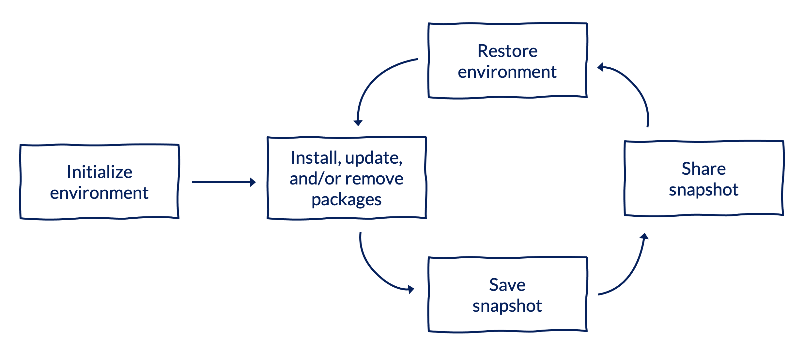
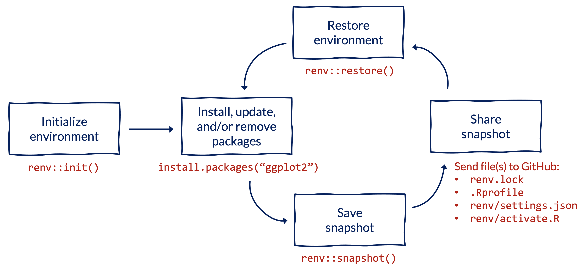
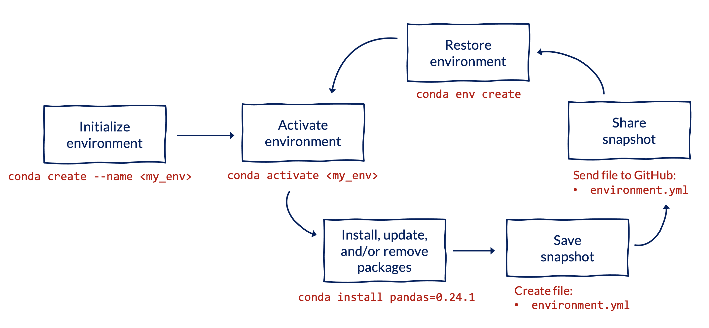

Virtual Environments
Introduction to Virtual Environments with R and Python at the Urban Institute
We highly recommend checking out the slides from an R Users Group talk in October 2023 from Erika Tyagi and Will Curran-Groome called renv: How to save your collaboRators (and future you) grief.
This guide is intended to help R and Python users at the Urban Institute start using virtual environments. This guide assumes familiarity with Git and GitHub (see this guide if you are not familiar with these tools) and is focused on helping folks start using virtual environments without having to meaningfully modify their existing workflows.
1 Why should I use a virtual environment?
Virtual environments promote reproducibility by letting you let you specify project-specific versions of packages. They accomplish this by making it easy to take a snapshot of the version of packages used in a project and restore that snapshot on other computers. They also make it easy to switch between snapshots on a single computer as you switch between projects.
To make this more concrete, here’s a few situations when setting up a virtual environment can save you several hours (or even days!) of frustration:
- You published an analysis based on 2021 data. A year later, you want to update the analysis with 2022 data, but your code no longer works because a function in a package was updated.
- Your coworker is running into errors running your code because of differences in package versions between your computers.
- You need to use Python 2.7 for a legacy project, while using Python 3.7 for all other projects.
- You want to use a new library that has known compatibility issues with Python 3.8 on Windows computers, so you want to use Python 3.7 for just one specific project.
- You got a new computer and don’t want to spend hours remembering which R packages to install through endless
Error in library(<>): there is no package called '<>'errors. - Your code takes a long time to run locally, so you want to leverage powerful virtual computers in the cloud - or scale to use tens, hundreds, or thousands of computers simultaneously - but you first need to install the relevant packages on the virtual machine(s).
Importantly, virtual environments are just one piece of reproducible research workflows - they are NOT replacements for other important components of reproducibility like version control, directory management, or data provenance.
2 When should I use a virtual environment?
Ideally, always. You’ll be more likely to regret NOT setting up a virtual environment for a project down the line than to regret spending a few minutes doing so for a project that didn’t necessarily require one. Getting into the habit of using virtual environments for smaller projects will also help you develop confidence when using them for larger projects with more collaborators and complex dependencies.
While the best time to set up a virtual environment for a project is at the very beginning (right after initializing your GitHub repository), the second best time is right now - whether you’re halfway through writing your code, ready to publish your results, or have already published your analysis.
3 Which environment manager should I use?
For R projects, we recommend using renv. For Python projects, we recommend using conda. These are by no means the only environment managers for R and Python, but we’ve found these to be the most reliable and user-friendly for the majority of use cases at Urban.
Within the R community, renv, developed and maintained by RStudio, is the de facto virtual environment manager. Older resources might reference packrat, which has been soft-deprecated and is now superseded by renv. According to the developers of renv,
The goal is for
renvto be a robust, stable replacement for the Packrat package, with fewer surprises and better default behaviors. If you’re using R alongside Python, it may make sense to usecondaas your environment manager. Documentation for using R with the Anaconda distribution andcondaenvironment manager is available here. Alternatively, you can use Python withrenv, as documented here.
There is a plethora of virtual environment managers in Python, with a few of the most common being virtualenv, pipenv, poetry, and conda.
For data science and research use cases, conda is a popular option for several reasons. First, conda is both an environment manager and a package manager. As a result, conda helps install packages and manage dependencies, whereas other tools rely on pip for package management. Unlike other managers, conda also has native support for programming languages beyond Python (including R). Lastly, conda is extensible, letting you install packages from pip, for example, and offering Miniconda as a lighter-weight alternative or Mamba as an even faster “drop-in replacement” for conda.
If you’re using R and Python, conda or renv are good options given their emphasis on interoperability. Documentation for using R with conda is available here, and documentation for using Python with renv is available here.
4 How do I set up a virtual environment?
4.1 The big idea



4.2 Workflow and commands
To set up a virtual environment for an R project, we recommend using renv. To install renv, use the standard syntax to install R packages from CRAN: install.packages("renv").
All commands below should be run in the RStudio console within your project’s directory.
Initialize a new project-specific environment:
renv::init()Note that
renv::init()creates a.gitignorefile for your project, so there is no need to create a.gitignorewhen you first create your project.If you are using urbntemplates, first run
urbntemplates::start_project()withgitignore = FALSEto create the project, then runrenv::init()to initialize a project-specific environment.Install packages using your usual workflow or
renv::install(), which works with other repositories like GitHub in addition to CRAN:install.packages("ggplot2") # install from CRAN renv::install("tidyverse/dplyr") # install from GitHubNote that
renvcan install packages from a variety of sources.Save a snapshot of the environment to a file called
renv.lock:renv::snapshot()Share the snapshot of the environment by sending three files to GitHub:
renv.lock,.Rprofile, andrenv/activate.R.Note that running the
renv::init()command in the first step automatically updates your.gitignorefile (if relevant) to tell Git whichrenvfiles to track.Restore the snapshot of the environment on another computer:
renv::restore()Repeat the process. As you and your collaborators install, update, and remove packages, repeat steps 3-5 to save and load the state of your project to the
renv.lockfile across computers.
To set up a virtual environment for a Python project, we recommend using conda, which is built into the Anaconda distribution through Anaconda or Miniconda. If you haven’t already installed Anaconda, see this guide from a previous Python Users Group session. You can verify that conda is installed and running on your computer with conda --version. If you get an error, see the Anaconda troubleshooting guide.
All commands below should be run from the Anaconda Prompt or a terminal window (e.g. within RStudio or VS Code) from the root of your project’s directory.
Initialize a new environment (optionally specifying a version of Python and/or a list of packages) using one of the options below. You should replace
my_envwith a descriptive name specific to your project.conda create --name my_env # create empty environment conda create --name my_env python==3.7 # create environment with specific Python version conda create --name my_env python==3.7 pandas numpy # create environment with packages installedIt’s best practice to specify packages when initializing the environment to let
condahelp manage dependencies most effectively.Activate the environment, again replacing
my_envwith the name of your environment:conda activate my_envInstall packages using your usual workflow (optionally specifying the package version) for any packages that you did not include when initializing the environment in the first step:
conda install pandas # install default version of pandas conda install pandas=0.24.1 # install specific version of pandasIt’s best practice to specify the version number associated with a package to ensure that changes in packages over time don’t affect the reproducibility of your code.
Save a snapshot of the environment to a file called
environment.yml.conda env export --from-history > environment.ymlThe
from-historyflag is necessary to make your environment file work across platforms.Alternatively, you can manually create the
environment.ymlfile in the root of your project directory, where it would follow this structure:name: my_env dependencies: - python=3.7 - pandas=0.24 - numpy=1.21If you installed packages using
pip, theenvironment.ymlfile would follow this structure:name: my_env dependencies: - python=3.7 - pandas=0.24 - numpy=1.21 - pip=19.1 - pip: - awscli==1.16 - kaggle==1.5Note that packages installed using
pipuse==to specify the version number, while packages installed fromcondause=.Share the snapshot by sending the
environment.ymlfile to GitHub.Restore and activate the snapshot of the environment on another computer:
conda env create conda activate my_envThe
conda env createsyntax assumes you have a file calledenvironment.ymlin your working directory. While you could give this file a different name, we recommend sticking with the convention of naming the fileenvironment.ymland placing it in the root of your project’s directory.Repeat the process. As you and your collaborators install, update, and remove packages, repeat steps 4-6 to save and load the state of your project to the
environment.ymlfile across computers.
5 Additional resources
The 10-minute talk from rstudio::conf(2022) called You should be using renv from E. David Aja is a great overview of the motivation for using the tool. We also recommend the official Introduction to renv and Collaborating with renv vignettes.
We recommend keeping the official conda cheat sheet handy.
In addition to the commands included above, a few other commonly used conda commands include:
conda deactivatedeactivates the current environmentconda listlists all packages in the current environmentconda env listlists all environments (with the current active environment asterisked)conda env remove -n my_envdeletes themy_envenvironment
The official documentation and this guide from the Carpentries are also helpful resources.
6 Getting help
Adding a new tool to your workflow can be hard, but we’re here to help! Feel free to email Erika Tyagi (etyagi@urban.org) or Will Curran-Groome (wcurrangroome@urban.org) or drop a message in the #reproducible-research Slack channel with any questions or if you run into issues.
7 Obligatory xkcd comic
I couldn’t pick just one, so here’s three: